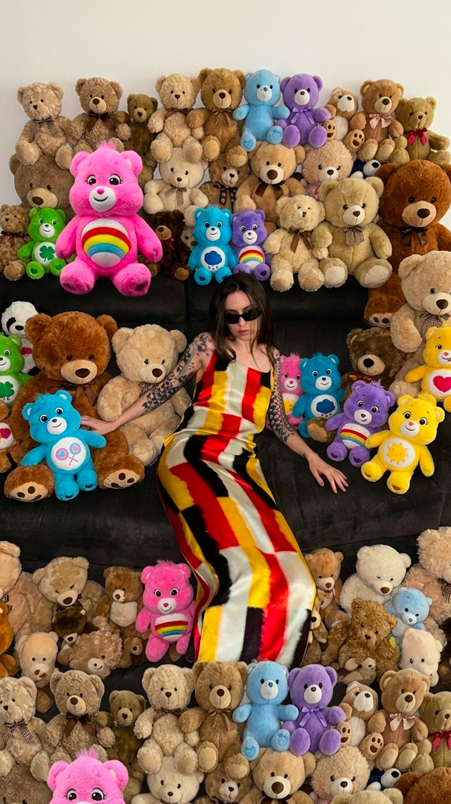
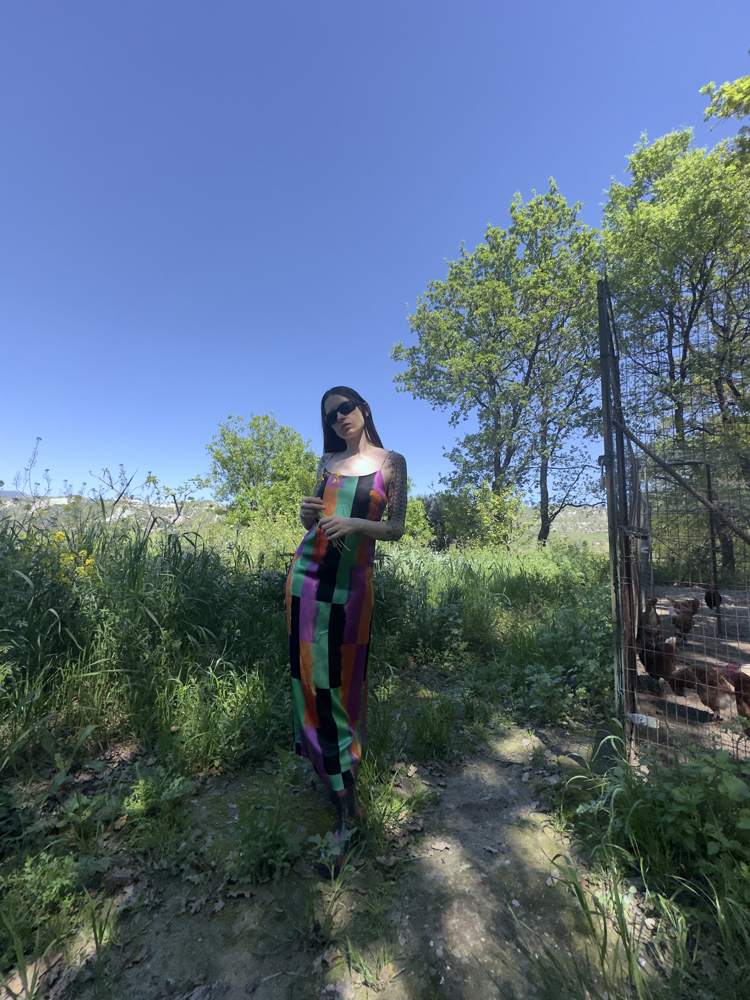

March 2026
FURTHER REVIEW
Visual diary between intimacy, underground culture and editorial photography.
A series exploring texture, movement, softness and raw digital aesthetics.
Further Review is a Polish ready-to-wear fashion brand founded by A>O. I collaborate on developing its visual universe, including art direction, editorial shoots, and conceptual graphic content for newsletters.
It is a space where fashion, storytelling, and visual experimentation intersect. I approach it as a creative field of expression, working across image-making and narrative design to build a cohesive and evolving identity.
This collaboration allows me to explore both artistic direction and graphic composition within a contemporary fashion context, bridging creative vision with communication design.